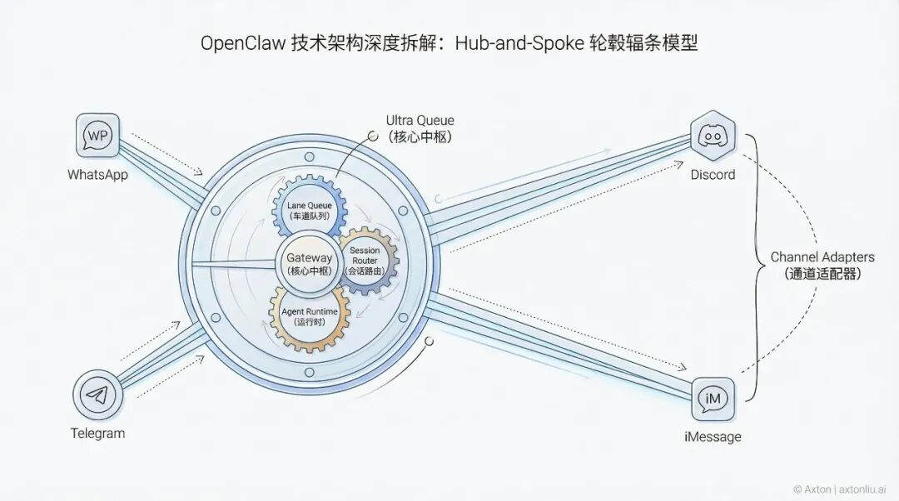
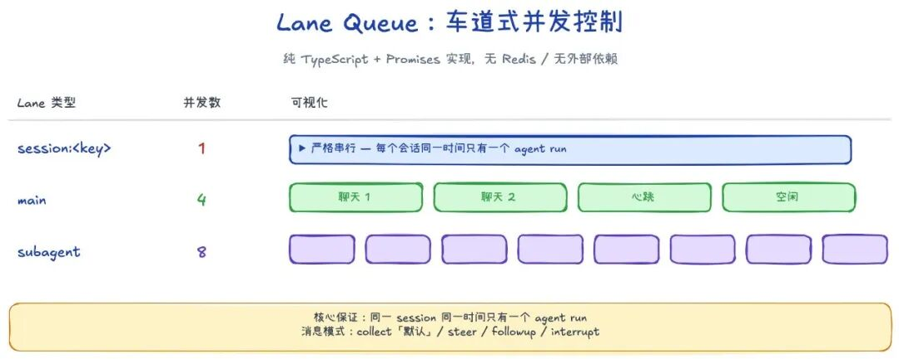
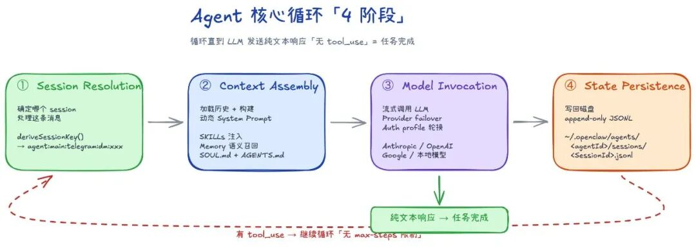
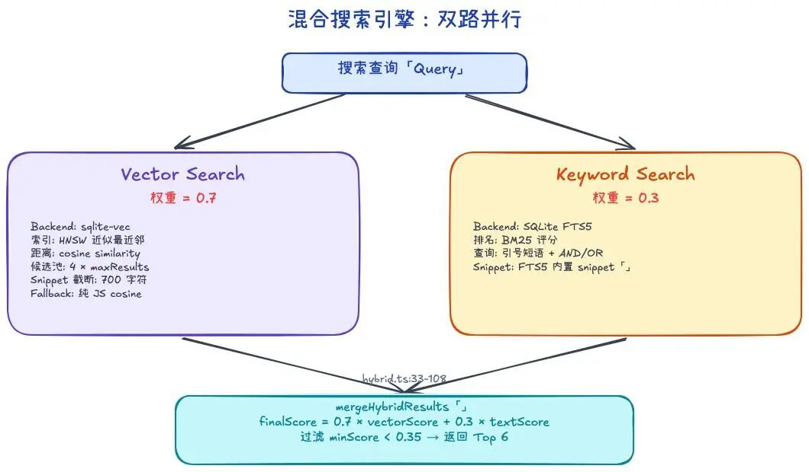

这篇文章由 AI 自动分析 OpenClaw 开源代码库后生成,聚焦 HOW(实现细节)而非 WHAT(功能介绍)。Axton 对结构和关键判断做了审校,但主体内容来自 AI 的源码阅读。这本身就是"AI 辅助深度研究"的一个实际案例。
1. 整体架构概览
OpenClaw 是一个 TypeScript ESM 项目,运行在 Node.js 22+ 之上,使用 pnpm 构建,可选 Bun 执行。整个系统是一个三层架构:
核心设计模式:Hub-and-Spoke(轮毂-辐条)。Gateway 是中心轮毂,所有 Channel Adapter 和工具执行都是辐条。
2. Gateway:控制平面的核心
Gateway 是一个 单进程 WebSocket 服务器,默认绑定到 127.0.0.1:18789。使用 ws 库,所有 WebSocket frame 通过 JSON Schema(由 TypeBox 生成)验证。
关键约束:
• 单 Gateway per host(防止 WhatsApp session 冲突)
• 事件驱动,非轮询
• 所有副作用操作需要幂等键,保证安全重试
• 非 loopback 绑定时需要 token 或 password 认证
2.1 Session Router(会话路由器)
Session Key 的格式是层级化的:
具体例子:
• agent:main:main — 操作者主会话(完整权限)
• agent:main:whatsapp:direct:+15555550123 — WhatsApp 私聊
• agent:main:direct:+15555550123 — 跨通道合并 DM
• agent:main:telegram:group:-1234567890 — Telegram 群聊
2.2 Lane Queue(车道队列):并发控制核心
这是 OpenClaw 最精巧的设计之一。队列采用 lane-aware FIFO 架构,纯 TypeScript + Promises 实现,无外部依赖、无后台线程。
核心保证:"Only one agent run touches a given session at a time"——通过 per-session lane 实现。

3. Agent Runtime:Pi Agent Core
OpenClaw 内嵌了 @mariozechner/pi-agent-core(简称 Pi),通过 runEmbeddedPiAgent 函数驱动完整的 agentic loop。
3.1 核心循环的 4 个阶段
1. Session Resolution — 确定哪个 session 处理消息
2. Context Assembly — 加载历史、构建动态 system prompt、通过语义搜索拉取记忆
3. Model Invocation — 流式调用配置的 provider
4. State Persistence — 将更新后的对话状态写回磁盘
循环终止条件:LLM 发送了纯文本响应(没有 tool_use block)= 任务完成。

3.2 System Prompt 组装
buildAgentSystemPrompt 组装多个 section,有三种模式:
Prompt 组件(按注入顺序):
1. AGENTS.md — 操作指令和记忆规则
2. SOUL.md — 人格、边界、语调
3. TOOLS.md — 用户维护的工具使用指南
4. IDENTITY.md — Agent 命名和身份
5. USER.md — 用户资料
6. Skills 注入(动态 XML 列表)
7. Memory 语义召回结果
8. 自动生成的工具定义
关键设计:空文件被跳过;大文件被裁剪并加截断标记。这种"文件即配置"模式让行为变更无需改源码——编辑 Markdown 文件即可。
3.3 Model Selection 与 Failover
Failover 策略:
• auth_error(401) — 标记 profile bad,轮换 auth
• billing_error(402) — 长 cooldown(默认 5h,指数增长至 24h 上限)
• rate_limit(429) — 临时 cooldown
• context_overflow — 自动 compact 并重试
3.4 Compaction(上下文压缩)
当 session 接近 context window 上限时触发自动压缩。
Memory Flush(压缩前的记忆冲刷):
这是 OpenClaw 最巧妙的设计之一。在满足触发条件的情况下,compaction 发生前系统触发一个 silent agentic turn(对用户不可见),提醒模型将可持久信息写入 memory/YYYY-MM-DD.md(必要时再整理到 MEMORY.md)。模型通常以 NO_REPLY 开头回复,OpenClaw 的投递层会过滤掉这个前缀。
4. Tool 系统
4.1 工具注册
Pi 核心工具:
• read — 读文件
• write — 写文件
• edit — 编辑文件
• exec / process — 执行命令
OpenClaw 扩展工具:
• browser — 浏览器自动化
• canvas — Canvas 渲染
• nodes — 节点操作
• cron — 定时任务管理
• sessions — 会话管理
• message — 消息发送
• memory_search — 语义搜索记忆
• memory_get — 读取记忆文件
4.2 Tool Policy 层级
权限按 pipeline 顺序逐层过滤(每一层都可以收窄工具集):
1. Profile Policy
2. Provider-Profile Policy
3. Global Policy
4. Global-by-Provider Policy
5. Agent Policy
6. Agent-by-Provider Policy
7. Group Policy
→ 再叠加 Sandbox 限制 + Subagent 限制
4.3 Plugin Hooks
Hook 是 TypeScript 模块,每个 Hook 目录包含 HOOK.md(文档)和 handler.ts(实现)。通过 jiti(运行时 TypeScript 加载器)加载,无需预编译。
生命周期 Hook:
• onSessionStart — 会话开始
• onBeforeTurn — 每轮推理前
• onToolCall / before_tool_call — 工具调用前拦截
• onToolResult / after_tool_call — 工具结果后处理
• before_compaction / after_compaction — 压缩前后
5. Memory 系统(持久记忆)
5.1 存储架构
OpenClaw 的记忆哲学是 "文件即真理"——只有写入磁盘的内容才会被保留。
文件结构:
• MEMORY.md — 策展的长期记忆
• memory/YYYY-MM-DD.md — 每日 append-only 日志
• 格式:纯 Markdown,人类可读可编辑
5.2 索引管线
索引存储:~/.openclaw/memory/<agentId>.sqlite(per-agent SQLite 数据库)
Chunking 策略:
• 每 chunk 约 400 tokens
• 80 tokens 滑动窗口重叠
• 存储在 chunks 表,包含文件路径、行范围、hash 等元数据
5.3 混合搜索实现
这是记忆系统的核心引擎。两路搜索并行执行,结果合并。
Vector Search:
• Backend:sqlite-vec 扩展,使用 vec_distance_cosine() 计算相似度
• 索引类型:vec0 虚表(精确搜索而非近似索引)
• 候选池策略:获取 4 × maxResults 候选,再排序取 Top-K
Keyword Search:
• Backend:SQLite FTS5(全文搜索引擎),chunks_fts 表
• 排名:FTS5 原生 BM25 评分
混合合并:
finalScore = vectorWeight × vectorScore + textWeight × textScore
默认权重:vector 0.7, text 0.3。低于 minScore(0.35)的结果被过滤。

6. Skills 系统
每个 Skill 是一个目录,核心文件是 SKILL.md(Markdown + YAML frontmatter)。
三个加载位置,优先级从高到低:
1. Workspace skills(<workspace>/skills)— 最高优先级
2. Managed/local skills(~/.openclaw/skills)
3. Bundled skills(npm 包 / OpenClaw.app)— 最低优先级
注入逻辑:
1. 加载时通过 metadata gates 过滤 skills
2. 运行开始时,将 skills.entries.<key>.env 或 apiKey 注入 process.env
3. formatSkillsForPrompt 将可用 skills 格式化为 compact XML list 注入 system prompt
4. 运行结束后恢复原始环境
7. Channel Adapters(通道适配器)
每个 Channel Adapter 实现相同的接口:
• 认证:各平台特有方式
• Inbound 解析:标准化文本、媒体、线程、reactions
• Access 控制:allowlist、DM pairing、group mention requirements
• Outbound 格式化:Markdown 转换、消息分块、媒体上传
WhatsApp 深入:Baileys 实现了 WhatsApp Web 协议的逆向工程——通过 WebSocket 直接与 WhatsApp 服务器通信,模拟网页端客户端。凭证存储在 ~/.openclaw/credentials/,使用多文件认证状态持久化。
iMessage 深入:需要 macOS,使用 AppleScript 与 Messages.app 交互。需要合适的签名权限。读取 Messages 数据库获取消息事件。
8. DM Policy 与权限系统
8.1 DM Policy 四种模式
• pairing(默认)— 未知发送者收到限时配对码(1h 过期),消息被阻止直到审批通过
• allowlist — 直接阻止未知发送者,不提供配对握手
• open — 允许任何人 DM
• disabled — 完全忽略入站 DM
8.2 Tool 权限控制
Per-agent 的 allow / deny 列表。高风险工具(exec, browser, web_fetch, web_search)应限制给受信 agent。
8.3 安全审计
openclaw security audit 命令检查:
• 入站访问策略(DM、group、allowlist)
• 宽松房间中的工具爆炸半径
• 网络暴露(binding、认证、token 强度)
• 浏览器控制暴露
• 本地磁盘卫生
• 插件安全
9. Sandbox(沙箱隔离)
沙箱针对的是 工具执行,而非 Gateway 本身。
Container 参数:
• --read-only:只读根文件系统
• --memory / --memory-swap:内存限制
• --cpus:CPU 限制
• --network none(默认):无网络访问
• -v <host>:/workspace:workspace 挂载
Scope 模式:
• session — 每会话创建/销毁(最强隔离)
• agent(默认)— 每 agent 共享
• shared — 所有 agent 共享(最高效)
10. Browser 自动化
底层使用 Chrome DevTools Protocol (CDP) 连接 Chromium 浏览器。Playwright 作为 CDP 之上的抽象层处理高级交互(click, type, snapshot, PDF)。
Browser Profiles:
• openclaw-managed — 专用 Chromium 实例,隔离 user data dir
• chrome — Extension relay 模式,指向个人 Chrome
• remote — 显式 CDP URL,连接远程浏览器
Snapshot 系统:
Agent 理解网页的方式——不是通过 CSS selector,而是通过 snapshot 生成的 numeric refs(数字引用)。Agent 使用 openclaw browser click 12 操作元素。
11. Cron / Heartbeat(定时与心跳)
11.1 Heartbeat(心跳)
执行模型:在 main session 中按固定间隔(默认 30 分钟)触发一次 agent turn。
HEARTBEAT.md:Agent 每次心跳时检查的 Markdown checklist。保持精简以减少 token 开销。
HEARTBEAT_OK 信号:如果没有需要注意的事项,agent 回复 HEARTBEAT_OK,Gateway 静默丢弃,不推送消息。
11.2 Cron Jobs(精确定时任务)
使用 5-field cron 表达式 + timezone 支持,在精确时间触发。
Session 类型:
• isolated — 干净 context,无历史记录;支持 model/thinking 覆盖;直接 announce 摘要
• main — 整合到现有 session 历史;system events 在下次心跳时投递
12. 关键设计哲学总结
12.1 "No Magic" 哲学
OpenClaw 的设计刻意避免复杂的隐藏状态:
• No max-steps:仓库层无 max-steps,仍受 timeout 等运行时约束
• No plan mode:未内置 plan mode,通常可通过工作区文件外显计划
• No built-in to-do tracking:未内置 to-do tracking
• 文件即配置:行为配置主要通过 Markdown 文件控制,改文件就改行为,不需要碰源码
12.2 "Trust Boundary as Session Key"
Session key 的拓扑结构(如 agent:main:main vs agent:main:telegram:dm:xxx)天然地编码了"谁在说话"和"它从哪里来"。实际权限由 sandbox mode 和工具策略(allow/deny 列表)共同决定,session key 提供的是会话拓扑信息,而非直接授权。这套设计让权限控制有了多层结构,而不需要一个独立的中心化 ACL 系统。
12.3 "Markdown as LLM-Native Interface"
Markdown 是核心的行为接口,涵盖了大部分跟 LLM 直接交互的配置:
• AGENTS.md:操作指令
• SOUL.md:人格
• TOOLS.md:工具指南
• SKILL.md:技能定义
• HEARTBEAT.md:心跳检查清单
• MEMORY.md:长期记忆
Markdown 的优势在于 LLM 天然擅长读写它,用它做行为配置比 JSON 或 YAML 对 Agent 更友好。
12.4 Lane Queue 的精巧
纯 TypeScript + Promise 实现的并发控制,没有 Redis,没有 RabbitMQ,没有 Worker Threads。通过 lane-aware FIFO 就解决了多 session 并发问题。这在系统设计上是一个极具教学价值的案例。
12.5 Memory Flush 的"最后时刻拯救"
当 context window 快满且满足触发条件时,不是直接截断,而是先让 agent 自己"想想有什么重要的要记下来",写入 memory/YYYY-MM-DD.md(必要时再整理到 MEMORY.md)后再压缩。这个设计灵感来自人类在睡前整理当天记忆的类比。